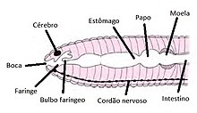

Características Adaptativas
Reino: Animalia
Filo: Anelídeos
Classe: Clitellata
Ordem: Opisthopora
Família: Glossoscolecidae
Gênero: Pontoscolex
As minhocas são animais escavadores encontrados principalmente em solos úmidos e ricos em matéria orgânica, em profundidades variáveis até aproximadamente 2m. Elas constroem galerias forçando sua extremidade anterior através de fendas e mediante ingestão do solo durante a escavação. À noite, as minhocas saem da galeria para se alimentar e reproduzir; por isso, diz-se que têm hábitos noturnos. O hábito noturno, bem como a presença de uma camada de muco na pele, são adaptações que evitam o ressecamento visto que seu tegumento precisa estar úmido para que se processe a respiração. A atividade das minhocas tem efeito benéfico no solo pois as extensas galerias aumentam a drenagem e a aeração do solo e a escavação mistura e revolve o solo, fazendo com que as substâncias orgânicas da superfície sejam deslocadas para níveis mais profundos e minerais subam à superfície. Pontoscolex corethrurus, como as outras minhocas, é um escavador de solos encontrado particularmente nas camadas superficiais de solos úmidos ricos em húmus.São animais subterrâneos, que escavam túneis e galerias à procura de abrigo, humidade e alimento.
Adaptações para viver
Ao se remexerem e escavarem o solo, as minhocas ingerem porções de terra, e, assim,
decompõem e transformam resíduos orgânicos em húmus: um excelente adubo para as
plantas. Além disso, arejam a terra facilitando a penetração de água e de raízes. Enfim: as
minhocas funcionam como verdadeiros "arados naturais".
São animais subterrâneos, que escavam túneis e galerias à procura de abrigo, umidade e
alimento. Esta espécie ocorre em diferentes habitats, como jardins, zonas agrícolas,
florestas e bosques.
Obtenção de alimento
As minhocas costumam alimentar-se de matéria orgânica em decomposição (nutrição
saprófaga), principalmente vegetais, mas podem comer pequenos animais do solo. Além
disso, aproveitam qualquer material orgânico contido na terra ingerida durante a escavação.
A alimentação ocorre na superfície ou dentro das galerias, para onde arrastam o alimento.
Possuem sistema digestivo completo apresentado, em extremidades opostas do corpo,
boca (zona anterior) e ânus (zona posterior). São animais subterrâneos, que escavam
túneis e galerias à procura de abrigo, umidade e alimento.
Características Biológicas

Regulação de água
As minhocas não possuem pulmões. Por isso, respiram por meio de toda a superfície da
pele (respiração cutânea), que realiza trocas gasosas com o ar existente nas partículas da
terra. Quando chove e o solo fica encharcado, a respiração não se processa e as minhocas
precisam subir à superfície para não morrerem afogadas.
Locomoção
O corpo desses animais é dividido em pequenos anéis, tanto do lado de fora do corpo da
minhoca, como em seu interior. Cada anel possui os seus próprios músculos. Assim, para
se mover, a minhoca alonga uma parte do corpo e encurta outra, movimento sucessivo
chamado de "alongar-encurtar".
Sistemas do corpo
Sistema respiratório - respiração cutânea indireta, dependente de um meio úmido para sobreviver. Nas
minhocas, a epiderme não possui uma camada de revestimento queratinizada
(impermeabilizante), o que dificulta as trocas gasosas.
Sistema circulatório - tem dois vasos sanguíneos principais que
percorrem o corpo do animal no sentido do comprimento. Um desses vasos é a artéria
ventral, por onde passa o sangue levando oxigênio aos órgãos. O outro é o vaso dorsal, que
traz o sangue de volta.
Sistema nervoso - é constituído por um par de gânglios cerebrais, um anel de nervos em
torno da faringe, um cordão nervoso ventral, que se estende até o segmento anal, bem
como um par de gânglios por segmento; São monoicas (hermafroditas) e apresentam
fecundação cruzada.
Comportamento

Estratégias de defesa
A sua coloração é bem próxima da terra em que se encontra, sendo assim, a mesma usa
disso para se camuflar, e se esconder de possíveis predadores.
Reprodução
As minhocas reproduzem-se sexuada e assexuadamente. Em geral, a reprodução assexuada se dá por divisão transversal do corpo, seguida de regeneração. São animais hermafroditas, com sistema reprodutor masculino e feminino. A cópula e a transferência de esperma são recíprocas (fecundação cruzada), e ocorrem à noite, durando de 2 a 5 horas. As glândulas do clitelo de cada indivíduo secretam muco para a cópula e formação de um casulo, onde são depositados os ovos, que se desenvolvem no meio externo de forma direta.